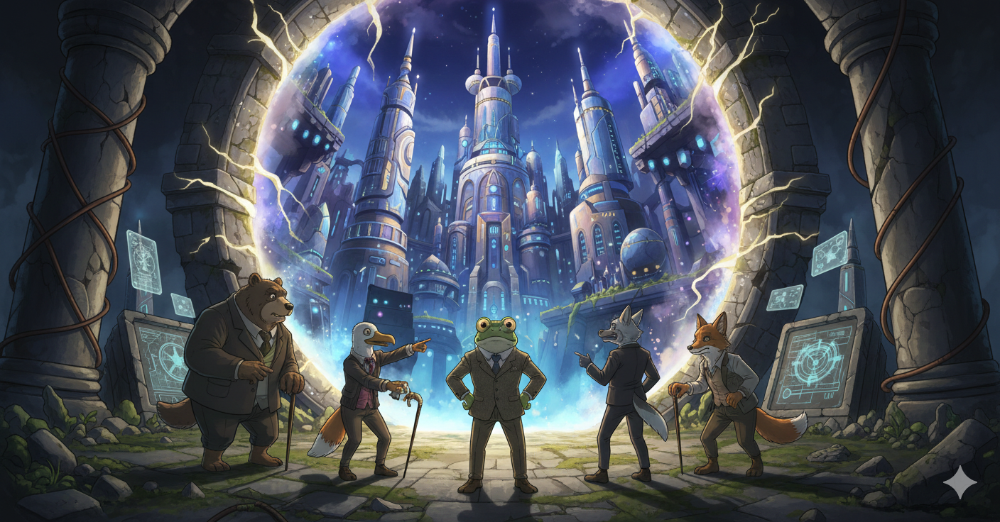

Dr. Sappo et Al. find an actual time rift showing a Technogarch megacity (Nano Banana concept)
Overview
Time Rifts are visible ruptures between temporal layers. They reveal how the world overlaps itself without permitting direct travel or intervention.
Narrative role
Rifts surface echoes of the past or possible futures, offering foreshadowing, warnings, or alternative perspectives. They are narrative gateways, not shortcuts.
Known facts
- Types: Micro, Stable, Wild, and Echo Rifts.
- Often appear where temporal stress is highest; may co-locate with anomalies.
- They act as symptoms of deeper imbalance; destroying them is unreliable and can worsen local instability.
Mechanics impact
- Exploration: show visions or playback loops; provide hints or lore drops, not portals.
- Encounters: rift-adjacent spaces can alter initiative, spawn echoes, or change elemental interactions.
- Systems hooks: tie to temporal risk meters; interaction may stabilize nearby anomalies or unlock a safe route.
Relationships
- Rifts expose the tear; anomalies are the lived consequences around it.
- Calendar context: rifts often reference BE strata but manifest in AE; conversion is never exact.
- Factions may try to harvest data from rifts (e.g., archivists, scholars, or opportunistic guilds).
Sources
- docbase/kb/time_rifts.md
- docbase/kb/time_anomalies_and_loops.md
- docbase/kb/cosmology_and_epochs.md